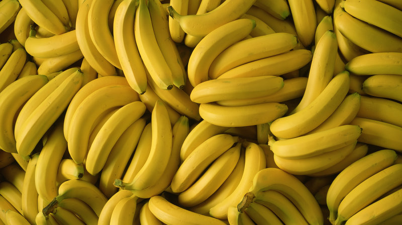
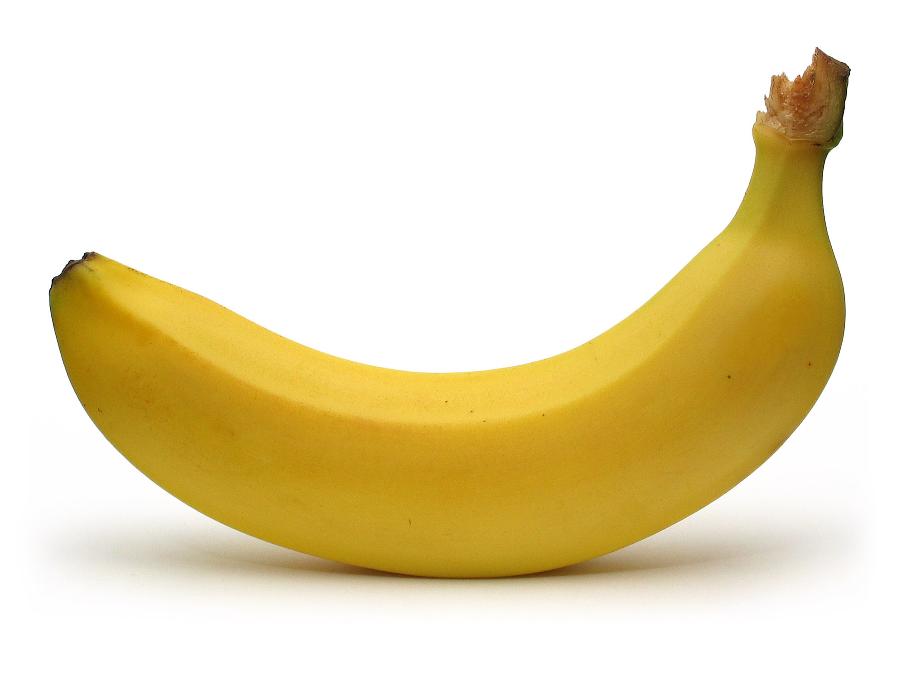

Do you know bananas?
A banana is an edible fruit – botanically a berry – produced by several kinds of large herbaceous flowering plants in the genus Musa. In some countries, bananas used for cooking may be called "plantains", distinguishing them from dessert bananas. The fruit is variable in size, color, and firmness, but is usually elongated and curved, with soft flesh rich in starch covered with a rind, which may be green, yellow, red, purple, or brown when ripe. The fruits grow in clusters hanging from the top of the plant. Almost all modern edible seedless (parthenocarp) bananas come from two wild species – Musa acuminata and Musa balbisiana. The scientific names of most cultivated bananas are Musa acuminata, Musa balbisiana, and Musa × paradisiaca for the hybrid Musa acuminata × M. balbisiana, depending on their genomic constitution. The old scientific name Musa sapientum is no longer used.
What a delicious fruit
Musa species are native to tropical Indomalaya and Australia, and are likely to have been first domesticated in Papua New Guinea. They are grown in 135 countries, primarily for their fruit, and to a lesser extent to make fiber, banana wine, and banana beer and as ornamental plants. The world's largest producers of bananas in 2017 were India and Tanzania, which together accounted for 24% of total production.